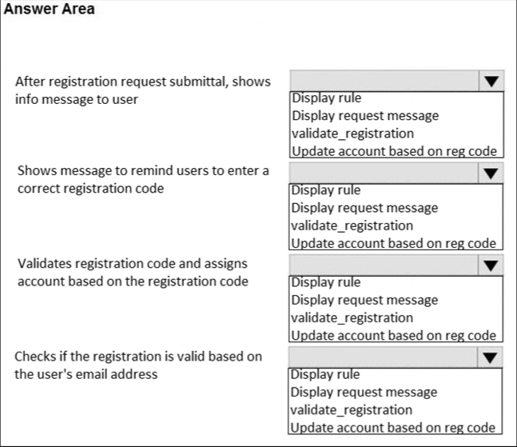
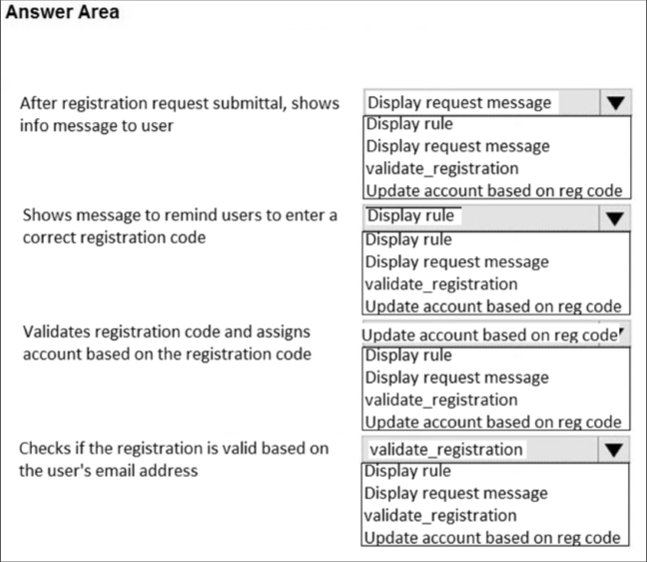

Answers verified with AI using ServiceNow documentation. Exercise your own judgement.
Question 1
Agents and managers cannot create knowledge articles from Community questions.
A. True
B. False
Question 2
Information about a customer’s service contract is found in Knowledge.
A. False
B. True
Question 3
From what places in SN can an agent create a case? (Choose three.)
A. Customer Service Application
B. Contact
C. Account
D. Chat
Question 4
What are the conditions that matching rules are based on? (Choose two.)
A. Agent resources best suited to work on a case
B. Specific routing rules
C. Filters set up in advanced work assignment
D. Specific case attributes
Question 5
Matching rules enhance assignment capability by ____________________.
A. Matching best agent by availability
B. Providing dynamic matching of cases to groups or individuals
C. Determining if account is a customer or partner
D. Matching best agent by skill
Question 6
Special Handling Notes can apply to which one of the following based on specific attributes?
A. Domain
B. Contact
C. Holiday
D. VIP
Question 7
Predictive Intelligence improves Case management by:
A. Predicting what values should have gone into empty fields in historical records
B. Reducing the number of records needed to accurately predict a value
C. Replacing legacy routing rules
D. Predicting Case values without manual intervention
Question 8
Which of the following is a condition for matching rules?
A. Agent domain
B. Assignment
C. Switching
D. Specific case attributes
Question 9
What do blue circles in the timeline of a case form represent?
A. Note
B. State
C. Activity
D. Comment
Question 10
Predictive Intelligence improves triage quality by eliminating the guesswork. Predictive Intelligence supports which of the following decisions? (Choose two.)
A. Case Escalation
B. Case State
C. Case Categorization
D. Case Prioritization
Question 11
Which Business Rules are part of the Customer Service Management baseline configuration? (Choose two.)
A. Apply Role by Customer
B. Auto Assessment
C. Change Update to Close
D. Update Case Entitlement
Question 12
What are the Critical Success Factors that are related to CSM Suite Implementations? (Choose four.)
A. Define the Business Pain Points
B. Provide consistent service to customers
C. Have a clear understanding of the use cases
D. Define the number of hours needed to develop the associated requirements
E. Implementation is only as good as the underlying process
Question 13
What should be emphasized when designing solutions? (Choose three.)
A. Minimize customizations
B. Focus Out-of-the-box functionality
C. Design for Scalability
D. Mobile friendly functionality
Question 14
What role does the Engagement Manager play before the Workshop? (Choose two.)
A. Project Manager
B. Acts as intermediary
C. Provides answers to technical problems
D. Assists with technical requirements
Question 15
What should be part of the pre-engagement collateral?
A. Frequently Asked Questions (FAQ)
B. Scoping Guide
C. Customer Service roles template
D. Stock Keeping Unit (SKU) and pricing sheet
Question 16
Articles can provide the following: (Choose three.)
A. Document current and known issues
B. Provide answers and responses to common issues or questions
C. Information about customer’s service contract
D. Share product information
Question 17
Contextual Search framework is used for providing Knowledge search results in which of these scenarios?
A. Entering question in portal only
B. Record Producer only
C. Both portal question entry and Record Producer
D. None of the above
Question 18
Which of the following are true regarding integrating a ServiceNow Knowledge base with external content? (Choose two.)
A. Imported external articles appear as attachments in ServiceNow
B. Only applications that allow WebDAV connections can be integrated
C. The imported article will have the same category it had in the source knowledge base
D. SharePoint blocks this integration
Question 19
Access to a Knowledge base or Article can be restricted based on a customer’s assets and the product models using which of the following? (Choose two.)
A. Knowledge Product Entitlements
B. Data Policy
C. ACL
D. User Criteria
Question 20
What are some benefits that Knowledge Product Entitlement provide? (Choose three.)
A. Reduces call volume
B. Makes it easier for Agents to manage case volume
C. Allows access to Knowledge Articles that are related to products owned by a customer
D. Information about customer’s service contract
E. Focused product marketing
Question 21
What are the characteristics of Knowledge Categories?
A. Shareable across KBs: Yes ; Multi-Level: No
B. Shareable across KBs: No ; Multi-Level: Yes
C. Shareable across KBs: No ; Multi-Level: No
D. Shareable across KBs: Yes ; Multi-Level: Yes
Question 22
Users with the sn_customerservice.proxy_contact role can do which of the following? (Choose two.)
A. Manage cases on behalf of customer service agents
B. Create cases on behalf of customers
C. Manage requests on behalf of customer service agents
D. Create requests on behalf of customers
E. Manage major incident communication on behalf of a customer service manager
Question 23
What is the purpose of a Catalog Item variable?
A. Grants the customer the opportunity to ask a question
B. Opens a wizard to help a customer fill in a case form
C. Guides a customer by providing hints on case forms
D. Allows the customer or consumer to qualify their answer
Question 24
What one of the following is optional when creating a Catalog workflow?
A. Publishing the workflow
B. Defining workflow activities
C. Approving the workflow
D. Managing workflow versions
Question 25
What module is used to create Case Record Producers?
A. Case Record Producers
B. Edit Records
C. Record Producers
D. Maintain Records
Question 26
Which one is NOT a dependency for the Customer Service Plugin?
A. Task Activities
B. Skills Management
C. Openframe
D. Communities
Question 27
ACME corporation wants to use ServiceNow CSM for supporting their customers through Twitter. What CSM entity would you recommend ACME to store the customer’s Twitter profile details?
A. Account
B. Not supported
C. Consumer
D. Social Profile
E. Personnel File
Question 28
Which social media channels are NOT available out-of-box?
A. Facebook
B. Twitter
C. LinkedIn
D. All of the above
E. None of the above
Question 29
What is the equivalent of NOT selecting any group, when configuring multiple active configurations of OpenFrame?
A. Selecting all the groups
B. Selecting none of the groups
C. Missing configuration
D. Misconfigured
Question 30
How many outbound email accounts are supported in Customer Service Management?
A. One
B. Unlimited
C. Two
D. One per business service
Question 31
What are features of Customer Service Management? (Choose four.)
A. Timed Audits
B. Service Entitlements
C. Demand Management
D. Service Prospecting
E. Real-time SLAs
F. Service Contracts
G. Skills-based routing
Question 32
What are the Forum User Types? (Choose three.)
A. Admin
B. Registered
C. Public
D. Custom
E. Moderator
Question 33
Which of the following are true regarding the Community Portal application? (Choose two.)
A. It is available to any customer with a Community license
B. It is available by default with the Support and Service portals
C. It is only available to CSM license holders
D. Most of the configuration does not require System Administrator role
Question 34
If only one user reports a content for moderation, the content will be hidden.
A. True
B. False
Question 35
The available case types are: (Choose two.)
A. Product Support
B. Order
C. Product
D. Support
Question 36
What is required to enable the Follow the sun field on the Customer Service Case form?
A. Nothing, it is a standard field
B. The value property on the form must be set to true
C. The plugin ‘com.snc.csm_time_recording’ needs to be activated
D. The value property on the form must be set to true and the field added to the case form
Question 37
In the Customer Service Management space, what does the term asset management mean?
A. Financial, contractual and inventory information of assets
B. A set of business activities and processes used to track assets
C. Tables in the Asset application
D. Tracking products or services customers are using
Question 38
Which of the following roles cannot update a consumer’s record?
A. sn_customerservice_agent
B. sn_customerservice_manager
C. sn_customerservice.consumer_agent
D. admin
Question 39
Major Issue Management uses which one of the following capabilities?
A. Governance Risk and Control
B. Targeted Communications
C. Asset management
D. Record producers
Question 40
What is required to synchronize fields from a parent to a child case(s)?
A. The advanced plugin (com.sns.pa.customer_service_advanced) needs to be activated
B. Major Issue Management needs to be installed and certain properties enabled
C. No action required, this is a standard Customer Service Management feature
D. The role of sn_customerservice.customer_case_manager must be assigned
Question 41
HOTSPOT - Match the definitions for roles relationships.
Question 42
Which of the following functions can be completed when using the Field Service Management Application on a mobile device offline? (Choose three.)
A. Manage requests
B. Execute assigned tasks
C. Close work orders
D. Manage cases
E. Manage assets
Question 43
Information in the Case Field ‘Contact’ is copied to which Incident Field?
A. Contact
B. User
C. Customer
D. Caller
Question 44
How many active OpenFrame configurations can you have on an instance?
A. 2
B. Unlimited
C. 1
D. 3
Question 45
What are common types of application record data that are imported during a CSM data migration? (Choose two.)
A. Knowledge Article
B. Accounts
C. Chat
D. Case
Question 46
Which are the key self-service functions of the Customer Support Portal? (Choose three.)
A. Community
B. Knowledge Base
C. Open An Incident
D. Service Catalog
Question 47
Which of the following are channels? (Choose two.)
A. Contacts
B. Web
C. Chat
D. Article
Question 48
Out-of-the-box, the consumer support portal (/csp) CANNOT be used for which one of the following actions?
A. Open an incident
B. Viewing knowledge articles
C. Live chat
D. Consumer self-registration
Question 49
The Customer Support Portal default configuration provides the following channels to interact with customers? (Choose two.)
A. Web
B. Social
C. Chat
D. Email
Question 50

HOTSPOT - Match the business rule to its function in the Self-Service Portal.

Question 51
The ServiceNow Communities feature is only available for customers with ServiceNow Customer Services Management licenses.
A. True
B. False
Question 52
Read the use case below to determine if the customer service relationship is B2B or B2C. Mary Contrary experiences a power outage and call the electrical company. The agent determines the outage is local to the customer and scheduled a technician to Mary’s house.
A. B2C
B. B2B
Question 53
If the CSM Demo Data Plugin has been installed what are two options either of which will prepare that instance to be used as part of the release path to production? (Choose two.)
A. Zboot the instance
B. Disable the Case Interceptor
C. Remove the Demo Data via a HI Request
D. Clone back to this instance from a valid instance
Question 54
What criteria can be used to determine when a new inbound case should be opened?
A. When a new customer is created
B. When an internal problem occurs
C. When a customer has a question or issue to resolve
D. When we have new marketing material for a customer
Question 55
From a service provider’s perspective, is the following a product or an asset? A cable modem model that the service provider sells.
A. Product
B. Asset
Question 56
Entitlements specify the level of service provided to customers.
A. False
B. True
Question 57
Partner admin contacts have access to the data of both their partner accounts and customer accounts.
A. True
B. False
Question 58
Which of the following are best practice with regard to data imports? (Choose two.)
A. When importing to multiple instances import to each instance separately.
B. Use ServiceNow automatic functionality to clean the data after it is in ServiceNow tables rather than in the legacy repository.
C. Ensure the field data lengths in ServiceNow are adequate for the imported data because ServiceNow does not automatically adjust the length.
D. Images embedded in Knowledge Articles should be uploaded separately.
Question 59
Cost Information on cases is available as part of the Performance Analytics Content Pack for Customer Service.
A. True
B. False
Question 60
What is the purpose of the Guided Decisions capability?
A. Provide agents with an escalation guide
B. Guide agents through account management
C. Dynamically guide agents to help resolve complex cases
D. Provide agents with a knowledge guide
Question 61
Which feature enables you to quickly identify high-priority tasks based on multiple dimensions, not just by a single field value like priority?
A. Case Performance
B. Case Analytics
C. Case Digest
D. Case Spotlight
Question 62
During which Now Create stage are workshops conducted?
A. Execute
B. Initiate
C. Deliver
D. Plan
E. Close
Question 63
Which application must be activated to enable customers to check in on-line for future appointments?
A. Business Location
B. Walk-Up Experience
C. Field Service Management
D. Service Organization
Question 64
What are some of the influencing factors that will help determine the type of customer support desk structure required? (Choose four.)
A. Knowledge and skills required for agents
B. Geographical location of customer
C. Languages spoken by agents
D. Number and type of support tools available
E. Number of customer service portals used
F. Number of agents required
Question 65
What is the default value in the Channel field when a new case is opened by a customer in the Service Catalog, using the Customer Service Portal?
A. Web
B. Catalog
C. Portal
D. Virtual Agent
Question 66
When activating the Customer Service Management Demo Data plugin, which case type is available besides product case?
A. Order
B. Contract
C. FAQ
D. Monitoring
E. Request
F. Billing
Question 67
What’s the purpose of the Deactivate Special Handling Notes Scheduled Job?
A. Runs at the end of the month and deactivates all Special Handling notes more than 30 days old
B. Runs weekly and must have the Active checkbox unchecked in order for Special Handling notes to be deleted by the end of the week
C. Runs on demand by the System Admin who must set specific weekly schedules and set only those that are priority 1-critical to be deactivated
D. Runs daily at midnight, checks all active alerts and sets the status to Expired for those that have reached their expiration dates
Question 68
What does the Agent Whisper function do?
A. Lets agents and chat supervisors have a conversation without the requester knowing
B. Lets the chat supervisors have a conversation with the requester without the agent knowing
C. Lets agents have chat conversations with other agents without the requester knowing
D. Lets agents and requesters have a conversation without the chat supervisor knowing
Question 69
Upon self-registration through the Consumer Service Portal, a record is created in: (Choose two.)
A. Contact (customer_contact)
B. Consumer User (csm_consumer-user)
C. Consumer (csm_consumer)
D. CSM User (csm_user)
Question 70
Who can create a customer service case from a community discussion? (Choose two.)
A. Customer service agent (sn_customerservice_agent)
B. Proxy case creator (sn_customerservice.proxy_case_creator)
C. Partner (sn_customerservice.partner)
D. Case Viewer (sn_customerservice.case_viewer)
Question 71
The assignment workbench uses configurable matching criteria to evaluate agents in a selected group and provide an overall ranking. What are the different types of criteria available for the assignment workbench? (Choose three.)
A. Correlation
B. Availability
C. Scripted
D. Simple Match
E. Aggregate
Question 72
Asset classes are defined to allow for logical grouping of assets. There are five asset classes provided to group assets, each Asset class provides unique functionality for that group of Assets in the platform. Which of the following are the asset classes used? (Choose five.)
A. Hardware assets
B. Facility assets
C. Configuration assets
D. Software licenses assets
E. Enterprise Software assets
F. Network assets
G. Consumables assets
Question 73
Which of the following best describes how the CSM application uses the Asset table?
A. CSM uses the Product table instead of the ITSM Asset table
B. CSM uses the Product Model table instead of the ITSM Asset table
C. ServiceNow uses the same Asset table for both CSM and ITSM, however CSM has a different subset of fields
D. Because CSM Assets are managed differently from ITSM Assets ServiceNow uses different Asset Tables for CSM than it does for ITSM
Question 74
A consumer service agent receives and accepts a case which was created by a consumer. The agent needs and requests more information from the consumer. After receiving the information, the agent proposes a solution that is accepted by the consumer. Given this scenario, what is the chronological order of case states used to manage this case?
A. New > Work in Progress > On Hold > Work in Progress > Resolved > Closed
B. New > Open > Work in Progress > Solution Proposed > Closed
C. Open > Pending > Work in Progress > Resolved > Closed
D. New > Open > Awaiting Info > Open > Resolved > Closed
Question 75
What are the types of matching criteria for Customer Service? (Choose four.)
A. Matching Skills
B. Last Assigned
C. Certifications
D. Distance
E. Assigned Cases
F. Availability Today
G. Partner Hours
Question 76
What is a supported external customer that, in turn, sells to and supports one or more customers?
A. Partner
B. Account
C. Contact
D. Consumer
Question 77
Customer Service Trending Topics is a capability that enables companies to use Predictive Intelligence to quickly pinpoint factors driving up case volume and act to mitigate them. Which of the following would be a benefit of using Predictive Intelligence Customer Service Trending Topics?
A. Eliminate the need for more traditional performance analytics
B. Auto-generate clusters of cases that point to similar underlying issues
C. Create root cause solutions for similar cases
D. A guaranteed reduction in call volume per month
Question 78
Which ServiceNow applications can be integrated out-of-the-box with CSM? (Choose three.)
A. Service Portfolio Management
B. Project Management
C. DevOps
D. Risk Management
E. ITOM Event Management
Question 79
Which of the following are benefits that may be gained from using communities? (Choose three.)
A. Reduce support costs
B. Engagement with Customers
C. Get product feedback
D. Reduce cost per sales
E. Increase marketing effectiveness
Question 80
What is a case?
A. An individual record that handles and resolves incidents for external customers
B. An individual record that is used to identify and create automation opportunities
C. An individual record that is used to identify and resolve a question or issue for an external customer
D. An individual record that handles and routes issues for internal users
Question 81
External content integration is important for agents to be able to access knowledge articles from external sources. ALL external sources must be:
A. WebDAV-versioned
B. Web-configurable
C. WebDAV-compliant
D. Web-based
Question 82
An Account Relationship is based on a defined account relationship hype. Users with the System Administrator role can define two types of relationships: (Choose two.)
A. Partner-to-customer
B. Account-to-customer
C. Account-to-account
D. Customer-to-Consumer
E. Partner-to-account
Question 83
Which knowledge records can be configured with User Criteria?
A. Knowledge Base
B. Knowledge Base and Category
C. Knowledge Base, Category and Article
D. Knowledge Base and Article
Question 84
When the virtual agent plugin is installed NLU is activated but is not available for use until what two configurations are completed? (Choose two.)
A. Choose the NLU service provider
B. In the NLU Settings configure the Intent confidence threshold
C. Enable NLU in Virtual Agent
D. In the NLU Settings configure the Entity confidence threshold
Question 85
An entitlement defines the types of support a customer receives. Entitlements are based on a number of standard fields such as product and asset. When Proactive Customer Service Operations is implemented which additional fields could be used? (Choose two.)
A. Contact
B. Configuration Item
C. Business Service
D. Install base item
E. Sold product
Question 86
When implementing Knowledge Product Entitlements, what is enabled when activating the Enable access control of Knowledge Articles system property?
A. Allows access to knowledge articles based on customer’s security access
B. Allows access to knowledge articles that are related to entitlements owned by a customer
C. Allows access to multi-product line knowledge articles
D. Allows access to knowledge articles that are related to products owned by a customer
Question 87
Advance Work Assignment assigns work to agents based on their availability, capacity, and skills. Agent Affinity enhances the Advanced Work Assignment process by adding additional agent details organized by affinity type. Which of these are these affinity types? (Choose three.)
A. Skill seniority
B. Account team responsibility
C. Historical
D. Related task
E. Product expertise
Question 88
In Agent Workspace Chat, Agents have the ability to use quick actions to work more efficiently. What action does the /r quick action perform?
A. Rejects an incoming chat and moves it automatically to the “General” queue
B. Routes the chat towards another group
C. Uses response templates to insert as text in a conversation
D. Rolls up the current chat history towards an existing case
Question 89
Name a security benefit gained from using scoped applications:
A. Prevents changes to tables without explicit permission from IT
B. Prevents third party integrations
C. Limits accessibility to other applications in the instance
D. Limits the number of update sets that can be applied
Question 90
The CSM application has a feature that can be used to filter records in CSM-related tables which are accessible by users with CSM roles. This feature makes it unnecessary to create business logic for those persona access the data. What is this feature?
A. CSM Query Rules
B. Data Policies
C. Filtered Lists
D. Access Types
Question 91
In Advanced Work Assignment, what does the overflow assignment capability do, if defined?
A. When one support group reaches capacity the work item is automatically routed to another group
B. Uses matching and assignment rules to send work items to the agent with the highest availability
C. Routes cases to different groups based on their skill set and availability
D. Uses matching and assignment rules to send work items to the agent with the most capacity
Question 92
Which role must B2B and B2C customers obtain, at a MINIMUM, to access to a ServiceNow instance?
A. External (snc_external)
B. Account Contact (sn_customeservice.account_contact)
C. Customer (sn_customerservice.customer)
D. Case Creator (sn_customerservice.case_creator)
Question 93
Which Flow Designer flow can be used to automatically close resolved cases if customers do not respond within a specified time?
A. Close Cases in Resolved state
B. Auto Close Resolved Cases
C. Resolved to Close State
D. Move Resolved Cases to Closed
Question 94
What role can be assigned to employees who are not fulfillers, such as those in sales and services, or do not have other CSM-specific roles, but have a need to create cases on behalf of customers?
A. Consumer (sn_customservice.consumer)
B. Customer (sn_suctomservice.customer)
C. External (snc_external)
D. Proxy Contact (sn_customservice.proxy_contact)
Question 95
Proactive Customer Service Operations works Event Management to proactively monitor and fix issues affecting customers. It can also trigger case workflow’s and enable organizations to notify customers whose services or products are impacted by an outage or issue. What are the three main components that make up Proactive Customer Service Operations? (Choose three.)
A. Proactive Prevention
B. Service-Aware Install Base
C. Service Reporting
D. Proactive Case
E. Service-Aware CMDB
F. Service Monitoring
Question 96
Which roles are considered external? (Choose two.)
A. Consumer Support Agent (sn_customerservice.consumer_agent)
B. Customer Admin (sn_customerservice.customer_admin)
C. Partner Admin (sn_customerservice.partner_admin)
D. Customer Service Agent (sn_customerservice_agent)
Question 97
The default configuration automatically closes resolved Cases after how many days?
A. 5 days
B. Cases are not automatically closed by default
C. 3 days
D. 10 days
Question 98
What do blue circles in the timeline of a case form represent?
A. Triggered SLAs
B. Activity updates
C. Customer comments
D. State changes
Question 99
What are the different resource matching methods on the Matching Rule form? (Choose four.)
A. History
B. Scripted
C. Advanced
D. Simple
E. Skill
F. Selection Criteria
Question 100
Which of the following child case states would cause parent - child case synchronization to fail? (Choose three.)
A. Resolved
B. In Progress
C. Awaiting Info
D. New
E. Closed
F. Cancelled
Question 101
External customers can view the problem, change, and request records associated with their customer service cases from the Customer and Consumer Service Portals. Which of the following can they approve in relation to cases via the portals?
A. Request Records and Escalations
B. Change Records and Request Records
C. Problem Records and Escalations
D. Problem Records and Incident Records
Question 102
Playbooks for CSM provide step-by-step guidance for resolving specific types of customer service cases. What are the three out-of-the-box playbooks for CSM? (Choose three.)
A. Case playbook for Onboarding
B. Case playbook for Services
C. Case playbook for Product Support
D. Case playbook for Complaints
E. Case playbook for Billing
Question 103
Based on which out-of-box attributes can Special handling Notes be applied to cases? (Choose three.)
A. Service Contract
B. Install Base Item
C. Product
D. Account
E. Contact
Question 104
As an agent you can report a knowledge gap, if you cannot find relevant articles that could help resolve a case. Which action is required to create the knowledge gap?
A. Document the knowledge gap in the case work notes and escalate the case
B. Post a question in one of the various Customer Service Management knowledge bases
C. Use Related Links on the case form to report a knowledge gap
D. Use the Create Knowledge button on the case form to report a knowledge gap
Question 105
What feature does the Product Model and Catalog Items Relationship plugin enable?
A. Agents are automatically proposed catalog items related to the chosen product on the case form
B. Consumers can track what products they have purchased via the catalog
C. It provides a contextual service catalog based on the customer’s subscribed services
D. Customer service managers can track the financial cost of customer’s subscribed services and the related requests
Question 106
What happens to a case whenever the state of one of the associated IT Service Management records (incident, problem, change) is updated?
A. The case escalates to an assignment group as defined in the default escalation template
B. The case work notes are updated automatically
C. The case action status changes to Related Task Updated
D. The case displays a special handling note highlighting the update
Question 107
Application Scoping from a security perspective brings the following benefits: (Choose two.)
A. Improves instance security by limiting access to other applications on the instance
B. Scoped applications prevent versioning for complex instances
C. Scoping hold the records and acts as a container for the desired CSM applications
D. Scoped applications limits autonomy and control of all aspects of the CSM application
Question 108
How can multiple service catalogs be made available on the Customer Service Portal?
A. Include them in the list of service catalogs on the Customer Service Portal record
B. Add them to the list of service catalogs in the Customer Service Portal header widget options
C. Only the Customer Service service catalog can be used on the Customer Service Portal
D. Create user criteria for each of the applicable service catalogs
Question 109
Now Create provides a prescriptive methodology, leading practices, and accelerators to help with ServiceNow implementations and upgrades. How many sequential project phases and exit gates are there in the Now Create Methodology?
A. Three
B. Five
C. Four
D. Six
Question 110
From which one of the following can an agent create a CSM Case:
A. Human Resource Application
B. Incident Management
C. Chat
D. Special Handling Note
Question 111
Using the out-of-the-box major issue management process flow, a consumer service agent proposes an existing case in the Open state as a major case candidate. The major case candidate has a consumer defined and is approved by the customer service manager What happens to the major case candidate?
A. The major case candidate becomes a major case
B. A new major case is created and the major case candidate is added as a child to the major case
C. The major case candidate requires an approval from the major issue manager
D. The major case candidate is closed and a new major case is created
Question 112
What types of escalation templates can be created? (Choose two.)
A. Case
B. Sold Product
C. Consumer
D. Account
Question 113
What are the recommended good practices when running implementation workshops? (Choose three.)
A. Give the customers the data they need so they can make an informed decision
B. Any financial implication of a decision should be handled by the delivery and sales team
C. Enforce customers to adapt their processes towards the baseline processes
D. Engage with customers to gain deep understanding of their organization
E. Guide the customer toward industry best practices
Question 114
What is the specific type of catalog item called that allows users to create task-based records, such as case records, from the Service Catalog?
A. Request Item
B. Record Producer
C. Catalog Processor
D. Case Template
Question 115
Out-of-box, which functionality handles state transitioning for case management?
A. Workflows
B. State Flows
C. Business Rules
D. Flows
Question 116
Which of the following are benefits of customer access management? (Choose two.)
A. It defaults the responsibility for access management to the customer service agent.
B. It increases security by automatically providing access to case information based on account hierarchy
C. It increases automation by automatically granting access to cases based on access to sold product
D. It improves the customer experience by enabling related parties to track and collaborate on cases.
E. It defaults the responsibility for access management to the customer.
Question 117
What are the advantages of leading indicators over lagging indicators? (Choose two.)
A. Hard to influence
B. Prospective
C. Retrospective
D. Easy to influence
Question 118
Customer Service Management Administrators can delegate Contact Administration activities to specific contacts within accounts by assigning specific roles to one or more users. Which of the following roles, if assigned, would allow the user to create contacts?
A. Customer case manager (sn_customerservice.customer_case_manager)
B. Customer account manager (sn_customerservice.customer_account_manager)
C. Customer admin (sn_customerservice.customer_admln)
D. Customer (sn_customerservice.customer)
Question 119
What is knowledge article versioning?
A. A content tracker for knowledge articles
B. A knowledge article publishing guide
C. The ability to manage and track article updates
D. A knowledge article numbering guide
Question 120
Service providers use business models to support their various customers. What type of customer is supported with the Business-to-Consumer (B2C) model?
A. Individuals
B. Partners
C. Contacts
D. Accounts
Question 121
When configuring email in Communication Channels, how many outgoing email addresses are supported?
A. One
B. Two
C. Three
D. Unlimited
Question 122
Which of the following roles have permission to create a relationship between a contact and an account? (Choose two.)
A. sn_customerservice_agent
B. sn_customerservice.customer_admm
C. sn_customerservice.partner_admin
D. sn_customerservice_manager
E. admin
Question 123
In CSM Asset Management has a different meaning than in ITSM or Corporate Finance Which of the following defines Asset Management in CSM?
A. The process of developing, operating, maintaining, upgrading, and disposing of assets in me most cost-effective manner
B. A generic activity or process responsible for tracking and reporting the value and ownership of assets throughout their lifecycle
C. Asset management has different use cases for tracking specific products or services customers are using
D. It includes all of the data crucial to support customers as efficiently as possible
Question 124
What is KCS (Knowledge Centered Services)?
A. A bunch of tables strictly pertaining to CSM case articles that focus on mapping articles to Knowledge management
B. A documented methodology to provide a set of best practices for creating and maintaining knowledge
C. A dashboard with specific visualization of the different knowledge bases and categories
D. An application that helps agents and managers to create cases from Knowledge articles
Question 125
When creating or importing assets for CSM, model categories are used to: (Choose three.)
A. Define whether a Configuration Item (CI) is created when an Asset record is created or vice versa
B. Group assets together
C. Build a classification structure for product models
D. Model the configuration options for each product model being sold to customers
E. Define a link between Asset classes and Configuration Item (CI) classes
Question 126
Viewing a customer’s install base in the CSM Workspaces enables customer service agents to: (Choose two.)
A. Close an upsell of related products and services not yet purchased by a customer
B. See the detailed configurations of the products and services deployed for a customer to determine the action needed
C. Trace Information provided in a case to the right product or service to which it relates
D. Monitor related operational services and configuration items that affect service health
Question 127
Benefits of Proactive Customer Service Operations include: (Choose two.)
A. Reduced inbound calls from customers
B. Reduction in staff turnover
C. Major cases can be eliminated as there will be no Impact to customers
D. Reduced Mean Time To Resolve (MTTR)
E. Guaranteed increase in customer satisfaction
Question 128
What features are included with the Customer Service Portal? (Choose three.)
A. Header with links for different customer activities such as creating a case
B. Search feature to get information from several repositories
C. Links to information sources such as the knowledge base, community and customer support
D. Links to marketing promotions and product coupons
E. The ability to create new accounts
Question 129
What does NLU stand for?
A. Natural-Learning Userability
B. Natural-Language Understanding
C. Natural-Learning URL
D. Natural-Language URL
Question 130
Out-of-the-box. cases are automatically closed after how many days?
A. 3 days
B. 5 days
C. 10 days
D. Cases are not automatically closed by default
Question 131
When are any changes to the platform considered a customization?
A. When they require an implementation spread across all project phases
B. If they are NOT applied through the usage of built-in tools on the Now Platform
C. When they are solely implemented for a custom application
D. When there are business demands for custom functionality that is not offered out-of-the-box
Question 132
Which solution must be implemented to let a breakdown dashboard appear as a pop-up window on the case form?
A. Service Analytics
B. In-form Analytics
C. Case Spotlight
D. CSM Prediction Results
Question 133
The case digests feature includes which types of case communication? (Choose two.)
A. Case Lifecycle Reports
B. Case Action Summaries
C. Post Case Reviews
D. Case Post Mortem
Question 134
By default what can customers with the customer (sn_customerservice.customer) role see on the customer service portal? (Choose three.)
A. Assets
B. Publications
C. Products
D. Contacts
E. Contracts
Question 135
Which feature allows an agent to copy reusable messages to case or task forms to provide quick and consistent messages to users?
A. Quick Messages
B. Quick Actions
C. Response Templates
D. Templates
Question 136
In the Customer Service Management space what defines the term asset?
A. A physical item
B. A specific product instance supported for a customer
C. A product that a company supports
D. A resource that allows a business service
Question 137
Which capabilities does the integration with Microsoft Outlook add-in offer? (Choose two.)
A. Escalate a case on the add-m panel of Outlook
B. Register the sender of an email as contact
C. As the Microsoft Outlook user, register yourself as self-contributor
D. Create cases using email content in Outlook for the customer contact
Question 138
To which entities can Special Handling Notes be applied out of the box?
A. Consumer
B. Entitlement
C. Sold Product
Question 139
Which service catalogs are available out-of-the-box in the customer portals? (Choose two.)
A. Partner Service
B. Customer Service
C. Consumer Service
D. Product Service
Question 140
Partner admin (sn_customerservice.partner_admin) contacts have access to:
A. Their customer account
B. Their partner accounts
C. Both
D. Neither
Question 141
From a security perspective, scoping brings several benefits: (Choose two.)
A. Improves instance security by limiting accessibility to other applications on the instance
B. Provides CSM teams the autonomy and control needed to configure and manage the CSM application, but not the CSM Service Portals
C. IT can manage and control the pace of the CSM teams because dependencies have been put in place
D. The scope holds the records and acts as a container for the desired Customer Service Management Applications
Question 142
Advanced Work Assignment (AWA) pushes work to qualified agents using work item queues, routing conditions, and assignment criteria that you define. Which step would ensure the work was allocated to the appropriate agent?
A. Set the Agent Experience (What agents see in their Workspace inbox)
B. Define Assignment Rules (How to assign work items)
C. Define Work Item Queues (Where to route)
D. Configure Service Channels (What to route)
Question 143
What action can be performed by a Partner Admin (sn_customerservice.partner_admin) and NOT by a Partner (sn_customerservice partner) in the Customer Service Portal?
A. Can view assets belonging to their partner accounts
B. Can create, view, and edit cases for their partner accounts
C. Can resolve cases reported by their partner accounts
D. Can create and update contacts for their partner accounts
Question 144
What is a household entity?
A. Group of users that usually share a common address and use services as a group
B. Group of people that usually share a common address and use services as a group
C. Group of customers that usually share a common address and use services as a group
D. Group of consumers that usually share a common address and use services as a group
Question 145
Why does the implementation team need to deliver core functionality to the customer as quickly as possible?
A. To expand the technical reach
B. To facilitate the requirement gathering during the workshops
C. To complete any complex customizations early enough
D. To realize near-term ROI (Return on Investment)
Question 146
Assignment workbench enables customer service managers to assign tasks to agents via configurable criteria known as Matching Rules. Which out-of-the-box configurable criteria can be used? (Choose three.)
A. Assigned Cases
B. Agent Affinity
C. Availability Today
D. Matching Skills
E. Agent History
Question 147
Regarding Account Teams, what is the purpose of marking a role as 'unique'?
A. The role then becomes a child responsibility
B. Ensure there is a dedicated account manager for that account
C. The role then becomes a parent responsibility
D. Prevent the same role being used on different customer accounts
Question 148
Configuration items (CIs) are entities that capture the individual configurations for each product sold to the customer CIs are stored in the configuration management database (CMDB). Assets are specific product instances that are supported for a customer. Which of the following statements is correct for CIs and assets?
A. The contract and entitlements of an asset dictate whether or not it is stored in the CMDB
B. The CMDB only tracks CIs, assets cannot be CIs
C. While the CMDB may track some assets as configuration items (CIs) not ALL assets are CIs
D. The CMDB tracks all assets as configuration items (CIs)
Question 149
Which of the following statements is correct when the 'Contact Local Time' field is enabled in a case form?
A. The field is not based of the customers profile time zone
B. The field is active in the base form
C. The field is always based on the system time zone
D. Agents can use the field to identify if it is the right time to contact customer
Question 150
Which of the following roles can update a consumer's record? (Choose two.)
A. Consumer Support Agent {sn_customerservice.consumer_agent)
B. Customer Service Manager (sn_customerservice_manager)
C. Customer Service Agent (sn_customerservice_agent)
D. Customer (sn_customerservice.customer)
Question 151
Which CSM Configurable Workspace feature enables agents to quickly view records in the contextual side panel without switching tabs?
A. Contextual Search
B. Agent Assist
C. Dynamic Related Records
D. Record Information
Question 152
With the Auto Close Resolved Cases flow enabled, and using its default settings, when will a reminder be sent to a non-responsive customer0
A. After 3 days
B. After 5 days
C. After 1 day
D. After 7 days
Question 153
The self-registration feature enables new customer contacts to submit registration requests from the customer portal. Which role is responsible for creating the unique registration code for each account?
A. Customer Service Manager (sn_customerservice_manager)
B. System administrator (admin)
C. Service organization administrator (sn_customerservice.service_organization_admin)
D. Customer admin (sn_customerservice.customer_admin)
Question 154
What action is required to enable agents to create an incident record for a case?
A. They must be assigned with the read role for incident
B. They must be assigned with the itil role
C. They must be assigned with the snc_intemal role
D. They must be assigned with the sn_customerservice.itsm_contributor role
Question 155
In the ’Action Status' column on a case list what could a red indicator dot mean? (Choose two.)
A. Blocked by approval
B. Blocked by case task
C. Blocked internally and by customer
D. Blocked by internally
Question 156
Which of the following are correct for parent/child synchronization? (Choose two.)
A. Multiple child cases can be managed from a parent case as in Major Issue Management
B. The Administrator can choose which fields to synchronize from parent to child cases
C. Parent to child cases can be synchronized regardless of which state the case is in
D. The property to synchronize parent to child cases is automatically enabled
Question 157
When the channel field on a case form is set to Social where are details of the social media conversations related to the case stored?
A. Social Channels
B. Social Profiles
C. Social Logs
D. Work notes
E. Additional comments
Question 158
Once a major case candidate is approved a major case is created. What then happens to the customer case?
A. The customer case becomes a child case of the major case
B. The customer case will be automatically closed
C. The customer case becomes the parent case of the major case
D. The customer case will automatically be related to a problem
Question 159
What are the types of units used to measure entitlements? (Choose two.)
A. Hours
B. Contract
C. Cost
D. Case
Question 160
How are ServiceNow’s out-of-the-box Customer Service Management applications packaged? (Choose two.)
A. Store Apps
B. Update Sets
C. Through private scopes
D. Plugins
Question 161
Which of the following statements is correct regarding product models in CSM?
A. Products models can only contain digital (logical) items
B. Product models can contain either physical items or digital (logical) items but not both in the same model
C. Product models can only contain physical items
D. Product models can contain both physical items and digital (logical) items in the same mode
Question 162
Which of the following is correct regarding the create contact (consumer) feature in CSM Workspaces?
A. The create contact (consumer) feature is available in all CSM Workspaces
B. The create contact (consumer) feature is not available in any of the CSM Workspaces
C. The create contact (consumer) feature is only available in the CSM Configurable Workspace
D. The create contact (consumer) feature is only available in the Agent Workspace
Question 163
Depending on which CSM workspace you are operating within, certain steps can be applied to configure the form header. Which of the following is correct regarding form headers in the CSM Configurable workspace?
A. The form header's secondary values can only he displayed above the ribbon components
B. The form header's primary values can be displayed in the contextual side panes instead of above the ribbon components
C. The form header's secondary values can be displayed in the contextual side panel instead of above the ribbon components
D. The form header for the case form can display five levels of field values from the case table
Question 164
User criteria records may be applied to which knowledge items?
A. Knowledge Base and Category
B. Knowledge Base Category and Article
C. Knowledge Base and Article
D. Knowledge Base
Question 165
What are the three main components that make up Proactive Customer Service Operations? (Choose three.)
A. Service Monitoring
B. Service Reporting
C. Service-Aware CMDB
D. Service-Aware Install Base
E. Proactive Case
F. Proactive Prevention
Question 166
What are the three out-of-the-box playbooks for CSM? (Choose three.)
A. Case playbook for Onboarding
B. Case playbook for Billing
C. Case playbook for Accounts
D. Case playbook for Product Support
E. Case playbook for Complaints
Question 167
Which of the following allows you to install out-of-the-box Customer Service Management applications within your ServiceNow instance? (Choose two.)
A. XML unloads
B. Plugins
C. Store Apps
D. Update Sets
Question 168
What are available matching criteria for case assignment in Customer Service Management? (Choose three.)
A. Partner Hours
B. Matching Skills
C. Distance
D. Certifications
E. Assigned Cases
F. Availability Today
Question 169
What is the purpose of the sidebar feature in CSM Configurable Workspace?
A. Enables agents to keep information regarding details of the case visible at all times
B. Enables agents to access response templates to help them resolve cases faster and more efficiently
C. To enable agents to collaborate with other agents or Subject Matter Experts (SMEs) in real-time for faster case resolution
D. Enables managers to discreetly monitor chats between agents and customers
Question 170
What is the specific type of catalog item that allows users to create any type of task, such as cases, from the Service Catalog?
A. Request Item
B. Service Catalog Request
C. Record Producer
D. Catalog Item
Question 171
Which feature sends an email notification containing a list of relevant knowledge articles to the case submitter and watchlist users associated with the case whenever a case is created?
A. Trending Topics
B. Auto-Responder
C. Proactive Customer Service Operations
D. Self-Service Analytics
Question 172
Depending on the CSM application configurations, cases can be assigned to agents manually or by using auto-assignment. Which routing and assignment features leverage matching rules? (Choose two.)
A. State Flows
B. Assignment Workbench
C. Assignment Rules
D. CSM Workspace
Question 173
What does Major issue Management use to identify all other customers impacted by a major case?
A. Account lists
B. Customer Product lists
C. Notify lists
D. Recipient lists
Question 174
Which of the following is correct regarding the social med a channel?
A. Cases cannot be created from any of the social channels
B. Cases are NOT created automatically from any of the social channels
C. Cases can be created automatically depending on which social channel is used
D. Cases are created automatically from all of the social channels
Question 175
When integrating Customer Service Management with IT Service management what separate action is required for Request Management?
A. Activation of the Customer Service with Service Management plugin (com.sn_cs_sm)
B. Activation of the Customer Service with Request Management plugin (com.sn_cs_sm_request)
C. Activation of the Customer Service Case Action Status plugin (com.snc.csm_action_status)
D. Activation of the Customer Service plugin (com.sn_customerservice)
Question 176
New case tasks use the following prefix:
A. CSMTASK prefix
B. CASETASK prefix
C. CSTASK prefix
D. No specific task prefix just existing TASK prefix
Question 177
When are child cases updated from the parent case?
A. Clicking on the Child Sync UI
B. Scheduled Job
C. Automatically upon update of parent
D. When the Sync scheduled job runs
Question 178
Which of the following features are specific to CSM Workspaces and will not be found in the Platform UI view? (Choose two.)
A. Special handing notes
B. Lookup and verify
C. Related search
D. Agent assist
Question 179
Customer service agents can use Agent Assist to search for information from an interaction. BY DEFAULT, what are the available search sources? (Choose three.)
A. Knowledge articles
B. Service catalog
C. Communities
D. Consumer service portal
E. Customer service portal
Question 180
Entitlements are counted using two types of units:
A. SLAs and contracts
B. Days and assets
C. Cases and products
D. Hours and cases
Question 181
Service-aware Install Base consists of which entities? (Choose three.)
A. Installed Products
B. Install Base Items
C. Assets
D. Sold Products
E. Configuration Items
Question 182
What is the primary output from the Requirements Gathering workshop?
A. Schedules
B. Use Cases
C. Stories
D. Personas
Question 183
What is a limitation regarding synchronization between a case and its associated work order?
A. If information changes on the Case form it is not updated on the Work Order form
B. Updates on a case or work order will only synchronize after the work order is approved
C. When creating a work order from a case only the Account field on the work order form is filed in but not the Company field
D. The data copied over to the Work Order form when creating a work order from a case cannot be configured or customized
Question 184
Which roles can propose a case as a Major Case candidate? (Choose three.)
A. Proxy contact (sn_customerservice.proxy_contact)
B. Customer case manager (sn_customerservice.customer_case_manager)
C. Customer service manager (sn_customerservice_manager)
D. Customer service agent (sn_customerservice_agent)
E. Major issue manager (sn_majorissue_mgt.major_issue_manager)
Question 185
Which of the following is a required field in the Resolution Information tad in order to close a case?
A. Cause
B. Closed
C. Resolution notes
D. Closed by
Question 186
Access to a Knowledge base or Article can be restricted based on a customer’s assets and the product models using which of the following?
A. Knowledge Product Entitlements
B. Data Policy
C. ACL
D. User Criteria
Question 187
What benefits does scoping an application bring? (Choose three.)
A. CSM teams can move at their desired pace, independent of IT
B. Provides CSM teams autonomy and control
C. CSM application data and business logic is protected from changes by other applications
D. Account records can be changed only while in the CSM scope
E. Changes in different scopes can be addressed in a single update set
Question 188
A customer service agent wants to escalate an account but is unable to use the Escalate Account related link on the Account form. What could be the reasons why the customer service agent is not able to use it? (Choose two.)
A. No escalation approval flow is configured
B. The parent account of the account to be escalated is not active
C. The customer service agent is not assigned with the escalation requester role
D. The account already has an open escalation record
Question 189
After installing the Performance Analytics Content Pack for Customer Service, which job must be run to retrieve daily case data from previous months?
A. Customer Service Historic Data Collection
B. Customer Service Initial Data Collection
C. Customer Service Daily Data Collection
D. Customer Service Case Data Collection
Question 190
When working with communication channels, what inbound email flows are available by default? (Choose two.)
A. Create case for product
B. Create case for asset
C. Update case from forward email
D. Create case from email
E. Update case using reply
Question 191
What determines how an escalation request is processed?
A. Escalation Rule
B. Escalation Template
C. Escalation Severity
D. Escalation Justification
Question 192
What allows the implementation of phases and tasks to meet performance goals track progress and measure success?
A. Performance Analytics Spotlight
B. Scheduled Reporting
C. Service Level Agreement Tasks
D. Continual Improvement Management
Question 193
For security purposes certain roles cannot be assigned to a group or individual at the same time. Which of me following two roles would be restricted?
A. snc_intemai and snc_external
B. snc_internal and sn_customerservice.consumer_agent
C. snc_internal and sn_customerservice_agent
D. snc_external and sn_customerservice.customer
Question 194
What are Special Handling Notes used for?
A. Bring important information about individual records to an agent's attention
B. For agents to view articles an attach them to a case
C. To ensure customers get the service they are entitled to receive
D. Help agents identify in which time zone a contact is located
Question 195
A customer service manager would like to limit the reading and creation of knowledge articles within a specific Knowledge Base to the Customer Support group only. Which features should be used to accomplish this? (Choose two.)
A. Can Read user criteria
B. Whitelist all other groups from the Knowledge Base
C. Hide the Knowledge Base from the Knowledge Base Portal
D. Cannot Contribute user criteria
Question 196
In case management, Parent Child Synchronization allows for which of the following:
A. Enabling the Customer Service agent to create cases so that all the children cases can be managed by managing the parent case
B. Parent cases to automatically generate child cases when all fields are filled out thus synchronized auto-population
C. Child cases to be separated from Parent cases and will not be synchronized automatically
D. Synchronization of all child cases as well as children of child cases on all levels
Question 197
Which predefined conversations are available for Customer Service Virtual Agent? (Choose two.)
A. Create Contact
B. Check Case Status
C. Close Case
D. Get Help with an Order
E. Get Help with an Asset
Question 198
What will be the state of a case after a customer rejects the solution proposed by an agent?
A. In Progress
B. Open
C. New
D. Solution Rejected
Question 199
Which of the following statements is correct with regards to partners vs. third-parties in ServiceNow’s CSM application? (Choose two.)
A. A partner will own the relationship with their customer
B. A partner and a third party are the same in ServiceNow’s CSM application
C. A partner does not own the relationship with a customer. This relationship is owned by the organization they are partnering
D. A partner is an organization that has been contracted to sell products and services they have actually purchased from another organization
E. A partner does not own any of the products or services provided by their partnering organization, instead they help to sell, deliver and support them on their behalf
Question 200
Advanced Work Assignment (AWA) automatically routes and assigns work items to agents based on which of the following rules? (Choose four.)
A. Experience
B. Skills
C. Availability
D. Shifts
E. Capacity
F. Products
Question 201
Installing the Customer Service Management plugin activates:
A. Only one other plugin - Field Service Management Plugin
B. No other Plugins
C. Only two other plugins - Portal and Case Management
D. Many other plugins at the same time
Question 202
From which places in ServiceNow can a customer service agent [sn_customerservice_agent] create a case? (Choose three.)
A. Account
B. Incident
C. Customer Service Application
D. Special Handling Note
E. Chat
Question 203
Which table must be extended when creating a new case type?
A. Case (sn_customerservice_case)
B. Case Task (sn_customerservice_case_task)
C. Task (task)
D. Case Type (sn_case_type)
Question 204
What are benefits of me Conversation History feature? (Choose two.)
A. Shorter calls for agents by reducing the time to search for information
B. A customized admin chat toolbar with emojis for agents to use in chat messages
C. Improved customer satisfaction as agents can respond to and resolve customer issues faster
D. Better language management by flagging key words and alerting chat managers when agents use one or more of those words
Question 205
What is the benefit of a phased release approach?
A. Team members schedules are able to synchronize
B. More time to develop stories
C. Working across multiple systems of record
D. Delivery of core functionality quickly
Question 206
On the Customer Service Portal which personas can see work orders from their company hierarchy? (Choose two.)
A. Partner admin
B. Partner contact
C. Customer admin
D. Customer contact
Question 207
What is the most efficient way to get cases to be dosed automatically after a few days?
A. Set the property glide.auto.close.cases resolved to true
B. Create a workflow associated with cases with a timer that changes the state after a few days
C. Create a Scheduled job that looks at the resolved_at date
D. Activate the Auto Close Resolved Cases flow
Question 208
Which roles can specify both skills and mandatory skills for cases and tasks? (Choose two.)
A. Customer service manager (sn_customerservice_manager)
B. Customer service agent (sn_customerservice_agent)
C. Customer administrator (sn_customerservice.customer_admin)
D. Partner (sn_customerservice.partner)
Question 209
An account is a supported external customer and a contact is a user who is an employee of an account. How many accounts can a contact be associated with?
A. One
B. Two
C. Three
D. Multiple
Question 210
A contact can submit a self-registration request from the customer portal with a registration code. Which of the following roles can approve the request? (Choose three.)
A. Customer service manager (sn_customerservice_manager)
B. System administrator (admin)
C. Customer administrator (sn_customerservice.customer_admin)
D. Partner administrator [sn_customerservice.partner_admon]
E. Service organization administrator (sn_customerservice.service_organization_admin)
Question 211
What benefits can be gained by integrating CSM with Field Service Management? (Choose two.)
A. Reduces agent workload
B. Reduces monthly case volume
C. Work orders can be created from a case
D. Customer can access work order details and tasks created for their case
Question 212
Guided decisions is a decision authoring and execution capability that dynamically guides agents to resolve complex cases. Guided decisions consist of decision trees. What is a decision tree?
A. A step-by-step methodology for creating and solving different case types
B. A detailed check list for customer service teams
C. A multi-step process consisting of a series of questions answers, and guidance
D. A set of steps used to define a complex process
Question 213
In the 'Action Status' column on a case list, what could a blue indicator dot mean?
A. Needs attention
B. Blocked internally
C. Blocked externally
D. Work in progress
Question 214
Customer service personnel who are allocated the customer service agent (sn_customerservice_agent) role are responsible for which of the following tasks? (Choose four.)
A. Assist customers with questions, issues and problems
B. Create cases
C. Propose major cases
D. View, edit, and work on cases
E. Approve customer contacts
F. Manage customer entitlements
Question 215
The ServiceNow add-in for Microsoft Outlook enables you to manage workflows such as creating and updating contacts and cases from within Microsoft Outlook. How could this feature positively affect customer experience?
A. As email is being used fewer agents would be required to create cases so service costs would go down
B. It is easier to report on data in emails which means managers would be better placed to track performance
C. It can lead to taster resolution of customer issues and faster response to customer inquiries
D. It would guarantee less wait time for customers who chose to call the customer service center
Question 216
In ServiceNow’s CSM Application, what is an interaction?
A. Any configuration item that has been made accessible to customers
B. A record that a Customer Service Agent uses to identify and resolve a question or an issue for an external customer
C. A binding agreement between two parties
D. A request for assistance made through a chat, phone call, or walk-up
Question 217
Which services does a Customer (sn_customerservice.customer) have access to? (Choose two.)
A. Can research questions issues, or problems, and create view and edit cases for only their own accounts
B. Can assign the roles to other contacts in the same account
C. Can view assets belonging to their account
D. Can edit information or roles for existing contacts
Question 218
To which recipient types can targeted communications (publications) be sent? (Choose two.)
A. Outsourced Service Providers
B. Contacts
C. Internal users
D. Households
Question 219
What does viewing a customer’s install base enable customer service agents to do? (Choose two.)
A. See the detailed configurations of the products and services deployed for a customer to determine me action needed
B. Monitor alerts for operational services and configuration items that affect service health
C. Trace information provided m a case to the right product or service to which it relates
D. Close an upsell of related products and services not yet purchased by a customer
Question 220
Which step in Advanced Work Assignment (AWA) would ensure the work was allocated to the appropriate agent?
A. Set the Agent Experience
B. Define Assignment Rules
C. Define Work Item Queues
D. Configure Service Channels
Question 221
When working with case types, what is the lowest level in the case type hierarchy called?
A. Sub-level
B. Leaf-level
C. Decision-level
D. Base-level
Question 222
Which roles are responsible for maintaining account team membership? (Choose two.)
A. Customer Admin [sn_customerservice.customer.admin]
B. Customer Case Manager [sn_customerservice.customer_case_manager]
C. System Administrator [admin]
D. Customer Service Manager [sn_customerservice_manager]
Question 223
What can a person assigned with the customer role access on the customer service portal by default? (Choose three.)
A. Cases
B. Related parties
C. Assets
D. Social profiles
E. Sold products
Question 224
Which of the following are benefits of customer access management? (Choose two.)
A. It increases security by automatically granting access to cases based on access to sold product.
B. It defaults the responsibility for access management to the customer.
C. It defaults the responsibility for access management to the customer service agent.
D. It improves the customer experience by enabling related parties to track and collaborate on cases.
Question 225
Which ServiceNow products can be integrated out-of-the-box with CSM? (Choose three.)
A. ITOM Event Management
B. Risk Management
C. Strategic Portfolio Management
D. DevOps
E. Financial Management
Question 226
When activating the Customer Service Management Demo Data plugin, which case type is available besides product case?
A. Order
B. Offer
C. Monitoring
D. FAQ
E. Request
F. Contract
Question 227
What are the different resource matching methods on the Matching Rule form? (Choose four.)
A. Simple
B. Advanced
C. Selection Criteria
D. Skill
E. Affinity
F. Scripted
Question 228
What is the purpose of the Guided Decisions capability?
A. Provide agents with an escalation guide
B. Dynamically assist agents through account management
C. Dynamically help agents to resolve complex cases
D. Provide agents with a knowledge guide
Question 229
Which feature enables employees to request support for themselves and for external customers?
A. Contributor Users
B. Business Locations
C. Responsibility Definitions
D. Account Management
Question 230
What functionality is required to automatically close resolved cases if customers do not respond within a specified time?
A. Auto Close Resolved Cases Business Rule
B. Auto Close Resolved Cases Scheduled Job
C. Auto Close Resolved Cases Flow Designer Flow
D. Auto Close Resolved Cases Workflow
Question 231
Advanced Work Assignment (AWA) automatically routes and assigns work items to agents based on which of the following rules? (Choose three.)
A. Experience
B. Skills
C. Products
D. Schedule
E. Workload
Question 232
Which feature provides easy-to-configure integrations between the Now Platform and third-party Customer Relationship Management (CRM) and Enterprise Resource Planning (ERP) tools or platforms?
A. Import sets
B. Active Directory
C. Web Services
D. Integration Hub
Question 233
Which table does the Account (customer_account) table extend?
A. Customer (sn_customer_service_customer)
B. Business Location (sn_csm_business_location)
C. Company (core_company)
D. Service Organization (sn_customer_service_organization)
Question 234
Which combination of roles is restricted for security purposes?
A. snc_internal and sn_customerservice_agent
B. snc_internal and sn_customerservice.partner_admin
C. snc_internal and sn_customerservice.consumer_agent
D. snc_external and sn_customerservice.customer
Question 235
What must a system administrator configure to define a different approval workflow for an escalation request?
A. Escalation Decision
B. Escalation Rule
C. Escalation Template
D. Escalation Reason
Question 236
Which entity represents specific versions of products being sold to and supported for customers?
A. Sold Products
B. Product Categories
C. Product Models
D. Portfolio Products
Question 237
After an assignment group is chosen, which mandatory step in Advanced Work Assignment (AWA) ensures the work is allocated to the appropriate agent?
A. Configure Work Item Queues
B. Set the Agent Experience
C. Set up Skills for Agents
D. Define Assignment Rules
Question 238
Which decisions does Predictive Intelligence support? (Choose two.)
A. Case Escalation
B. Case Prioritization
C. Case Categorization
D. Case Resolution
Question 239
What is the term for a formal agreement between a service provider and a customer that provides the customer with an expectation of service within a known timescale?
A. Service Level Agreement
B. Service Entitlement Agreement
C. Contractual Service Agreement
D. Operational Service Agreement
Question 240
Which Service-Aware Install Base entity defines configuration items accessible to customers?
A. Model
B. Install Base Item
C. Sold Product
D. Asset
Question 241
What are examples of what Guided Setup provides? (Choose two.)
A. Provisioning checklist and tasks necessary for setup
B. Fixed timeline of activities that need to be completed
C. List of tasks to be executed
D. Automatic configuration of case form and portal content
Question 242
In the base instance, cases are automatically closed after how many days?
A. Cases are not automatically closed by default
B. 5 days
C. 3 days
D. 10 days
Question 243
Which table stores consumer addresses?
A. cmn_location
B. csm_consumer_user
C. csm_consumer_address
D. cmn_location_type
Question 244
Who can manage Install Base entities? (Choose two.)
A. System administrator [admin]
B. Customer service manager [sn_customerservice_manager]
C. Data Analysts [data_admin]
D. Sales Managers [sn_sales_manager]
Question 245
What does a red highlight on a Case's Action status field indicate?
A. The SLA is nearly breached on the Case
B. The Case is blocked by other tasks or waiting for customer feedback
C. The case has been escalated and the priority increased
D. The case needs attention or is waiting for input / review
Question 246
What is the purpose of a Case Task?
A. Case tasks are only used only for Cases that have a Service Definition
B. Case tasks document customer information on a Case
C. Case tasks are used to assign work to the customer
D. Case tasks document additional work that needs to be completed to resolve the Case
Question 247
Where should non-configurable attributes be stored?
A. Case Tables
B. Product Model Tables
C. Free text
D. Contract Table
Question 248
What feature allows an agent to provide updates to customers and internal stakeholders while a Case is in progress?
A. Post Case Reviews
B. Open Case Summary
C. Case Action Summaries
D. Active Case Update
Question 249
What actions should be prioritized when storing Product Models with similar non-configurable attributes? (Choose two.)
A. Group them in a baseline table
B. Use custom tables
C. Create separate tables for each attribute
D. Modify each product's data model individually
E. Ensure attributes match those of existing tables
Question 250
Which business model involves supporting an organization's private customers and their employees?
A. B2B2B
B. B2B2C
C. B2C
D. B2B
Question 251
What does it mean if you do not see the Selector when creating Case tasks?
A. No service-to-service relationship has been defined
B. No Case to case task relationship has been defined
C. No product to case task relationship has been defined
D. No customer to task relationship has been defined
Question 252
For an implementation supporting a business and its customers, which business model should be used?
A. B2B2C
B. B2B2B
C. B2C
D. B2B
Question 253
What role do customer data models play in Service CSM from a technical perspective?
A. They support the implementation of various business models
B. They track employee performance metrics
C. They facilitate integration with third-party systems
D. They define the pricing structure for services
Question 254
Which business models serve an organization's private customers or workers for personal use? (Choose two.)
A. Business-to-Business (B2B)
B. Business-to-Business-to-Employee (B2B2E)
C. Multi-level B2B2B
D. Business-to-Business-to-Consumer (B2B2C)
E. Business-to-Consumer (B2C)
Question 255
When an agent requires additional information from the customer to help solve the case, the case state is:
A. Awaiting Info
B. Paused
C. Info Req
D. Waiting
Question 256
What does the case action status use to automatically determine the action status for Cases?
A. Case task state
B. Case flows
C. Case state
D. Case SLA
Question 257
How can customer service agents and managers manually set the Action status field for a Case?
A. Enable the Needs attention field on the Case form
B. Change the State to awaiting action
C. Manually change the Action status
D. Reopen the Case
Question 258
What are the types of units used in counting for entitlements in ServiceNow?
A. Incidents and Problems
B. Tasks and Projects
C. Cases and Hours
D. Requests and Changes
Question 259
How are consumers related to households?
A. Household Member table
B. Location table
C. Household field on the Consumer record
D. Consumers are not related to Households
Question 260
Why would a customer service manager system administrator create want tabs on a dashboard?
A. Reports must be categorized by role on each dashboard
B. To better organize reports and widgets, and make it easier to share widgets
C. Reports must be categorized by type on each dashboard
D. There's a finite number of widgets allowed per dashboard
Question 261
What action to be taken if the product has no configurable attributes?
A. Optimize data in the Install Base Item table
B. Create new child table for Install Base Item
C. Group into existing extended Install Base Item table
D. Store it in the baseline Install Base Item table
Question 262
Which data model should be employed to track a household where group of consumers share a common address?
A. Household with Consumer
B. Household with Customer Access Management
C. Consumer with Customer Access Management
D. Consumer with Organizational
Question 263
Which service catalogs are available in the base instance customer portals? (Choose two.)
A. Consumer Service
B. Customer Service
C. Partner Service
D. Product Service
Question 264
What is included in an account relationship record? (Choose three.)
A. Primary contact
B. Parent/Child related records
C. The account relationship type that this relationship record is based on
D. A target account
E. A source account
Question 265
What attribute/field is employed to construct the hierarchy of Install Base Items in a system?
A. Parent Install Base Item
B. Configurable Attributes
C. Root Install Base Item
D. Child Install Base Item
Question 266
What should be done if an attribute about an Install Base item is merely for informational purposes?